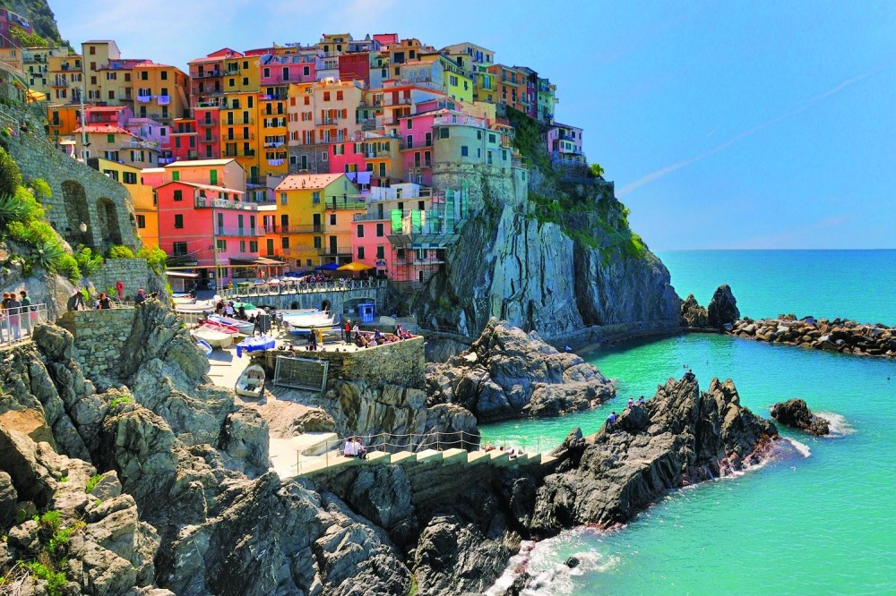
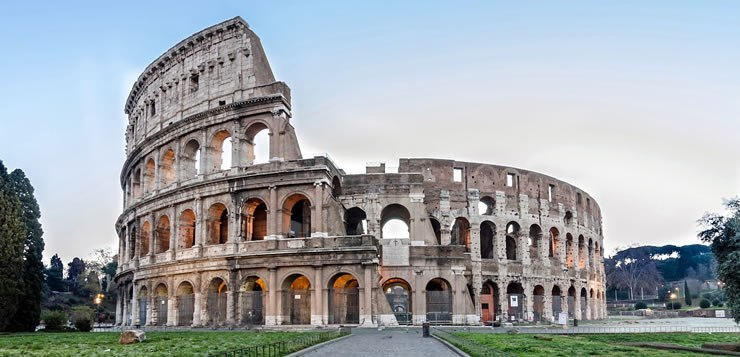
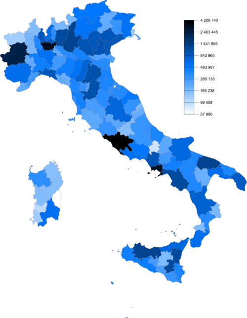

Itália, oficialmente República Italiana, é uma república parlamentar
unitária localizada no centro-sul da Europa.
Ao norte, faz fronteira com França, Suíça, Áustria e Eslovênia ao
longo dos Alpes. A parte sul consiste na totalidade da península
Itálica, Sicília, Sardenha, as duas maiores ilhas no mar
Mediterrâneo, e muitas outras ilhas menores ficam no entorno do
território italiano. Os Estados independentes de San Marino e do
Vaticano são enclaves no interior da Itália, enquanto Campione d'Italia é um ex-clave italiano na Suíça.
O território do país abrange cerca de 301 338 km² e a maior parte do
seu território tem um clima temperado sazonal. Com 60,8 milhões de
habitantes em 2015, é a quinta nação mais populosa da Europa e a
23.ª do mundo.
As temperaturas médias no inverno variam de 0 °C nos Alpes a 12 °C na Sicília, assim como as temperaturas médias no verão variam de 20 °C a mais de 25°C. Os invernos podem variar muito em todo o país com períodos frios, nevoentos e com neve no norte e condições mais amenas e ensolaradas no sul. Os verões são geralmente quentes e úmidos em todo o país, especialmente no sul, enquanto as áreas norte e central podem experimentar fortes tempestades ocasionais da primavera ao outono.
A moda italiana tem uma longa tradição e é considerada uma das mais importantes do mundo. Milão, Florença e Roma são as principais capitais da moda da Itália. De acordo com o Top Global Fashion Rankings 2013 da Global Language Monitor, Roma ficou em sexto lugar no mundo, enquanto Milão estava em décimo segundo lugar. As grandes grifes italianas, como Gucci, Armani, Prada, Versace, Valentino, Dolce & Gabbana, Missoni, Fendi, Moschino, Max Mara, Trussardi e Ferragamo, para citar algumas, são consideradas das melhores casas de moda do mundo. Além disso, a Vogue Italia é considerada uma das mais conceituadas revistas de moda do mundo.
O desporto mais popular em Itália é, de longe, o futebol. A equipa nacional de futebol da Itália, também conhecida por Squadra Azurra, é uma das equipas mais bem sucedidas do mundo, já que venceu quatro Mundias da FIFA (1934, 1938, 1982 e 2006). Os clubes italianos conquistaram 48 grandes troféus europeus, o que torna o país o segundo mais bem-sucedido no futebol europeu. A principal liga de futebol de clubes da Itália, Serie A, é considerada a terceira melhor da Europa e é seguida por milhões de fãs em todo o mundo.
A arquitetura italiana apresenta uma grande variedade de estilos, muito diversificados entre si, que não podem ser simplesmente classificados por período, mas também por região, devido à divisão da Itália em várias cidades-Estado até 1861, o que originou uma gama muito diversificada e eclética em projetos arquitetónicos. O país é conhecido pelas consideráveis realizações arquitetónicas, como a construção de arcos, cúpulas e estruturas afins durante a Roma antiga. Várias das mais belas obras da arquitetura ocidental, como o Coliseu, a Catedral de Milão, a Catedral de Florença, a Torre de Pisa ou os projetos de construção de Veneza, encontram-se na Itália. A arquitetura italiana influenciou amplamente a arquitetura mundial.
Em 2017, a Itália era o quarto país mais populoso da União Europeia (UE), com uma população de 60,4 milhões de pessoas. A sua densidade populacional era cerca de 201 habitantes por quilómetro quadrado, uma das maiores entre países da Europa Ocidental. Contudo, a distribuição populacional é bem dispersa e desigual. As áreas mais povoadas ficam no Vale do Pó (onde quase metade da população vive) e nas regiões metropolitanas de Roma e Nápoles, enquanto vastos territórios das terras altas dos Alpes e Apeninos, os planaltos de Basilicata e a ilha da Sardenha são esparsamente populadas.
